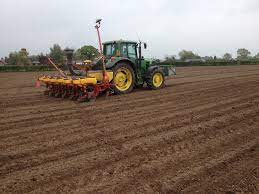
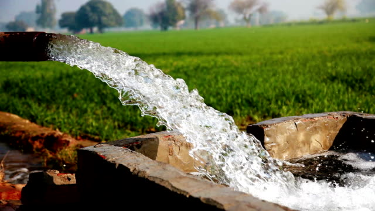

مکئی پاکستان میں گندم اور چاول کے بعد تیسری اہم ترین فصل ہے۔ اسے پوری دنیا میں خوراک، فیڈ اور صنعتی فصل کے طور پر استعمال کیا جاتا ہے۔ یہ ایشیا اور افریقہ کے کئی ترقی پذیر ممالک میں غذائی تحفظ میں اپنا حصہ ڈالتا ہے۔ مکئی کی فصل کو اس کی متنوع صنعتی کھپت کی وجہ سے "دوسرا سونا" کہا جاتا ہے۔
مکئی دنیا میں سب سے زیادہ پیداوار دینے والی اناج کی فصل ہونے کی وجہ سے پاکستان جیسے ممالک کے لیے ایک اہم اہمیت ہے۔ یہاں مکئی کا رقبہ 10 لاکھ ہیکٹر سے زیادہ ہے اور پیداوار 3.5 ملین میٹرک ٹن۔ مکئی کے زیر زمین کل رقبہ کا 39 فیصد اور کل پیداوار کا 30 فیصد حصہ پنجاب کا ہے۔ KPK کل رقبہ کا 56 فیصد اور پیداوار کا 63 فیصد حصہ ڈالتا ہے جبکہ کل رقبہ کا پانچ فیصد اور کل پیداوار کا تین فیصد حصہ سندھ اور بلوچستان کا ہے۔
یہاں ہم ضلع سرگودھا میں اس فصل کے بارے میں اہم معلومات پر بات کریں گے۔
مکئی سرگودھا میں خریف کا ایک مقبول چارہ ہے اور اسے مویشیوں اور مرغیوں کے چارے کے طور پر کافی استعمال کیا جاتا ہے۔ اس فصل کی کاشت 60 ~ 65 دنوں میں کی جا سکتی ہے اور اسے سرگودھا کے بیشتر علاقوں میں اگایا جا سکتا ہے۔ سبز ڈنٹھل میں کاربوہائیڈریٹ کی مقدار زیادہ ہوتی ہے اس لیے یہ پولٹری کے لیے ایک پرفتن خوراک ہے۔ ہائبرڈ بیج کو چارے کے مقاصد کے لیے استعمال نہیں کیا جانا چاہیے کیونکہ ان کے پودوں کی پتیاں کم ہوتی ہیں اور ان کا قد چھوٹا ہوتا ہے جس میں کم غذائیت ہوتی ہے۔
نیلم، اکبر، سرگودھا 2002 اور سلطان۔ سرگودھا 2002 ایک نئی امید افزا قسم ہے۔ یہ زیادہ دیر تک کھیت میں سر سبز رہ سکتا ہے اور پیداوار کو 50 منڈ فی ایکڑ تک بڑھایا جا سکتا ہے جس کی اوسط پیداوار تقریباً 600 منڈ فی ایکڑ ہے۔
پاکستان میں مکئی کی فصل بنیادی طور پر دو موسموں یعنی بہار اور خزاں میں اگائی جاتی ہے۔ موسم بہار کی مکئی فروری کے پہلے ہفتے سے مارچ کے پہلے ہفتے میں یا دسمبر کے وسط سے مارچ کے وسط تک اور خزاں میں مکئی کی بوائی کا وقت وسط مئی سے اگست تک لگایا جا سکتا ہے
مکئی مختلف قسم کی مٹی کے مطابق ہوتی ہے لیکن زیادہ پیداوار حاصل کرنے کے لیے اسے زرخیز گہری اور اچھی نکاسی والی زمین کی ضرورت ہوتی ہے۔ 6.5-7.5 کی پی ایچ رینج والی مٹی سب سے زیادہ سازگار ہوتی ہے۔ اچھی طرح سے نکاسی والی، بھاری مٹی جس میں نامیاتی مادے کی مقدار زیادہ ہوتی ہے اور اچھی پانی رکھنے کی صلاحیت زیادہ ہوتی ہے۔ پانی بھری مٹی اس کی کاشت کے لیے سب سے زیادہ نقصان دہ ہے۔
انکرن اور بیج کے قیام کے لیے سازگار حالات ہیں۔ بیج کی تیاری کے اہم مقاصد فیلڈ کو 3-4 دیا جانا چاہئے۔ ہر ہل کے ساتھ سہاگہ باندھنے کے بعد بار بار ایک دوسرے سے کراسنگ ہاررونگ۔ کھدائی کی صورت میں مٹی کی پروفائل کو بھرنے کے لیے کھیت کو 1-1.5 ایکڑ انچ کے ساتھ پہلے سے سیراب کیا جانا چاہیے۔ کھیت کی گنجائش یا کھیت کی حالت کے بعد زمین کی نمی کو محفوظ رکھنے کے لیے تختے کے ساتھ ہلکی پھلکی کھدائی کی جانی چاہیے۔ مکئی کے لیے عام باریک مٹی کی ضرورت ہوتی ہے جس میں چھوٹے ڈھکن اور کمپیکٹ بستر کی ضرورت ہوتی ہے۔
ریزوں کی بوائی کی صورت میں ہائبرڈ مکئی کے بیج کی شرح 8-10 کلوگرام فی ایکڑ ہے۔ بیج کو کچھ نظامی کیڑے مار دوا سے تیار کیا جاتا ہے، مثال کے طور پر امیڈاکلوپریڈ 1 گرام فی کلو بیج کی شرح سے۔ چارے کی فصل یا نشریات کے لیے بیج کی شرح 40 - 50 کلوگرام فی ایکڑ ہے۔.
مکئی کو چپٹی زمینوں کے ساتھ ساتھ کناروں پر بھی بویا جا سکتا ہے۔ سیلابی آبپاشی پر پانی کی بچت کے لیے رج کی بوائی بہتر ہے۔ اٹریکٹر ڈریجر کے ساتھ ریزز 75 سینٹی میٹر کے فاصلے پر بنائے جاتے ہیں۔ چوکا طریقہ یا دستی بوائی رج کی بوائی کے لیے کی جاتی ہے۔ فلیٹ بوائی کی صورت میں، مکئی کی بوائی خودکار ٹریکٹر سے ڈرل یا دستی/ہینڈ ڈرل کے ساتھ قطاروں کے درمیان 75 سینٹی میٹر کے فاصلے پر کی جاتی ہے۔ پتلا پن ابھرنے کے 10 - 15 دن کے بعد کیا جاتا ہے، جس می ں کمزور پودوں کو نکالنا یا کاٹنا اور پودے کو 20 - 25 سینٹی میٹر یا 8 - 10 انچ کا فاصلہ برقرار رکھنا شامل ہے۔ 30,000 سے 33,000 فی ایکڑ پودوں کی آبادی زیادہ سے زیادہ پیداوار حاصل کرنے کے لیے ناگزیر ہے۔
زیادہ پیداوار حاصل کرنے کے لیے مٹی کی زرخیزی کو برقرار رکھنے کے لیے ضروری ہے کہ مٹی میں کھاد یا کھاد ڈالی جائے۔ 300 - 400 من کھیتی باڑی کی کھاد، بوائی سے تین سے چار ہفتے پہلے لگائیں اور مٹی میں ملا دیں۔ اگر FYM دستیاب نہ ہو تو سبز کھاد کی سفارش کی جاتی ہے۔ مکئی کے لیے فی ایکڑ کھاد کی تجویز کردہ خوراک 2 تھیلے ڈی اے پی، 3.5 تھیلے یوریا، 2 تھیلے ایس او پی اور ایک تھیلی زنک سلفیٹ 10 کلو۔ تمام فاسفورس اور پوٹاشیم کو ڈرلنگ کے وقت سائیڈ ڈریس کیا جاتا ہے یا دوسری زمین کی تیاری کے وقت شامل کیا جاتا ہے اور زنک سلفیٹ کو آبپاشی کے ساتھ لگایا جاتا ہے۔ یوریا پہلی بار فرٹیگیشن سسٹم کے ذریعے لگائی جائے، درخواست ہاف بیگ 15 - 20 دن 2nd 3rd کے ظہور کے بعد، درخواست ایک بیگ 30 - 40 DAE، درخواست ایک بیگ 50 - 55 4th DAE اور درخواست 60 - 65 DAE۔

مکئی خشک سالی کی حساس فصل ہے اور اسے کامیابی کے لیے بار بار آبپاشی کی ضرورت ہوتی ہے۔ پودوں اور تولیدی ترقی. خشک سالی بہت سے جسمانی کو محدود کر دے گی۔ کم پیداوار کا باعث بننے والے عمل۔ سینٹر پیوٹ سسٹم کے دو بڑے فائدے ہیں۔ پہلی بات صرف یہ ہے۔ پودے مستقل اور مستقل بنیادوں پر پانی حاصل کرتے ہیں۔ محور آبپاشی کے نظام پودوں کو اوسطاً ہر 3 دن میں پانی حاصل کرنے دیں۔ یہ پانی کی اجازت دیتا ہے زمین میں بھگو دینا، جڑوں کی گہری نشوونما کو فروغ دیتا ہے جس کے نتیجے میں حوصلہ افزائی ہوتی ہے۔ صحت مند پودے. مرکز کے محور کا دوسرا فائدہ یہ ہے کہ بخارات کی وجہ سے پانی کا نقصان ہوتا ہے۔ اور ہوا میں بہتی کم سے کم ہے۔ محور چھڑکنے والے سروں کو ہونے دیتے ہیں۔ پودوں کی چوٹیوں کے اوپر صرف انچ تک نیچے، اس طرح یہ یقینی بناتا ہے کہ زیادہ تر پانی فصل تک پہنچتا ہے اور ہوا میں نہیں اڑاتا۔ مکئی کی فصل کا پانی ضرورت 22 - 27 انچ یا 550 - 700 ملی میٹر ہے۔
شوٹ فلائی اور اسٹیم بورر مکئی کے بڑے کیڑے ہیں۔ شوٹ فلائی کو Imidacloprid 70WS گروپ @ 7.0 gm فی کلوگرام بیج کے علاج سے 40 دن تک کنٹرول کیا جا سکتا ہے، جبکہ 5-6 کلوگرام فی ایکڑ کاربوفوران گروپ کے گرانول کے استعمال سے تنے کی مکھی کو کنٹرول کیا جا سکتا ہے۔ تاہم، آرمی ورم، امریکن ورم، دیمک، جسد، افیڈ اور مائٹس بھی پولیس پر حملہ کر سکتے ہیں جنہیں مناسب سپرے سے کنٹرول کیا جانا چاہیے
پتے کا جھلس جانا اور ڈنٹھل سڑنا مکئی کی اہم بیماریاں ہیں جن کو احتیاطی تدابیر کے طور پر 2.0 گرام فی کلوگرام بیج کی تھیوفینیٹ میتھائل کے بیج ٹریٹمنٹ سے کنٹرول کیا جا سکتا ہے۔ اگر ہو جائے تو مینکوکسب @ 500 گرام فی ایکڑ سپرے کریں۔

دو قسم کے گھاس ہیں جو مکئی کی پیداوار کو متاثر کرتے ہیں۔ یہ چوڑے پتوں والے گھاس ہیں جیسے کروند، بٹھو، تاندلہ، جنگلی پالک، جانگلی ہالو، ڈھوڈک، کلفا، لہلی اور اتسیت۔ جہاں تک گھاس یا تنگ پتوں والی جڑی بوٹیوں کا تعلق ہے یعنی کھلے، مدھانا، سوانکی، بارو اور ڈیلہ بڑے گھاس ہیں۔ عام وسیع پتوں کی جڑی بوٹیوں اور بیجوں کے کنٹرول کے لیے پرائم ایکسٹرا گولڈ 720 ایس سی پہلی جڑی بوٹی مار 400-800 ملی لیٹر فی ایکڑ کے حساب سے نم کھیت میں آبپاشی کے بعد ان جڑی بوٹیوں کو کنٹرول کرنے کے لیے موثر ہے۔ دوہری گولڈ 800 ملی لیٹر فی ایکڑ پر ابھرنے سے پہلے کی جڑی بوٹی مار دوا کے طور پر استعمال کیا جاتا ہے۔ بوائی کے تقریباً 25 دن بعد ہاتھ سے کدال لگانے سے چھوٹے پیمانے پر جڑی بوٹیوں پر تسلی بخش کنٹرول حاصل ہوتا ہے۔

مکئی کی فصل اس وقت کاٹی جاتی ہے جب اناج میں نمی کا تناسب 20-25 فیصد ہو۔ اس مرحلے پر کوب میان مکمل طور پر سوکھ جاتا ہے، ڈنٹھل پر کچھ خشکی ہو سکتی ہے۔ کوبس کو کھڑی فصل سے ہٹا کر سورج کی روشنی میں خشک کیا جاتا ہے جب تک کہ اناج کی نمی 15 فیصد سے کم نہ ہو جائے

مکی سے خشک مکئی کے دانوں کو محفوظ طریقے سے خارج کرنے کے لیے ہاتھ سے چلنے والے یا طاقت سے چلنے والے مکئی کے شیلرز دستی یا ہینڈ شیلنگ سے بہتر ہیں۔ مکئی کے چھلکے والے دانے صاف کرنے کے بعد جوٹ کی بوریوں میں ٹھنڈی، خشک اور ہوا دار جگہ پر محفوظ کیے جاتے ہیں، یا تو سیمنٹ کے فرش پر یا لکڑی کے تختوں پر؛ اسے مٹی کے فرش پر ذخیرہ نہیں کیا جانا چاہئے۔ سٹور روم کا درجہ حرارت 20 - 25 ° C رکھا جاتا ہے جبکہ رشتہ دار نمی 30 - 50 فیصد برقرار رکھی جاتی ہے۔
مکئی کی ہائبرڈز فی ایکڑ 120 من سے زیادہ اناج پیدا کرنے کی صلاحیت رکھتی ہیں۔ مقامی اقسام کی پیداوار 40-50 من فی ایکڑ ہے۔
ذخیرہ کرنے کے لیے اناج کی نمی %10 ہے جسے سورج کی پتلی تہہ میں خشک کرکے اور موسم اور سورج کی روشنی کے لحاظ سے 1-3 دن کے لیے دن میں دو بار موڑ کر حاصل کیا جاسکتا ہے۔ صاف اناج کو دھونے والے اسٹورز میں ذخیرہ کیا جانا چاہیے۔